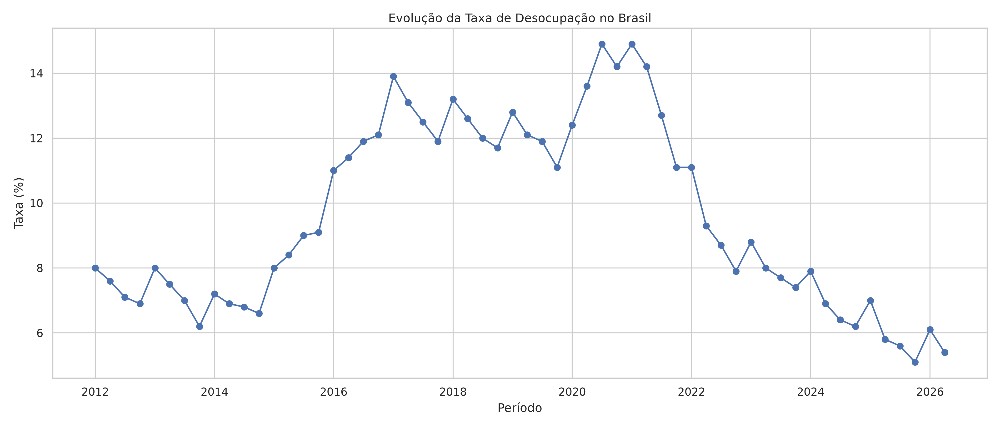
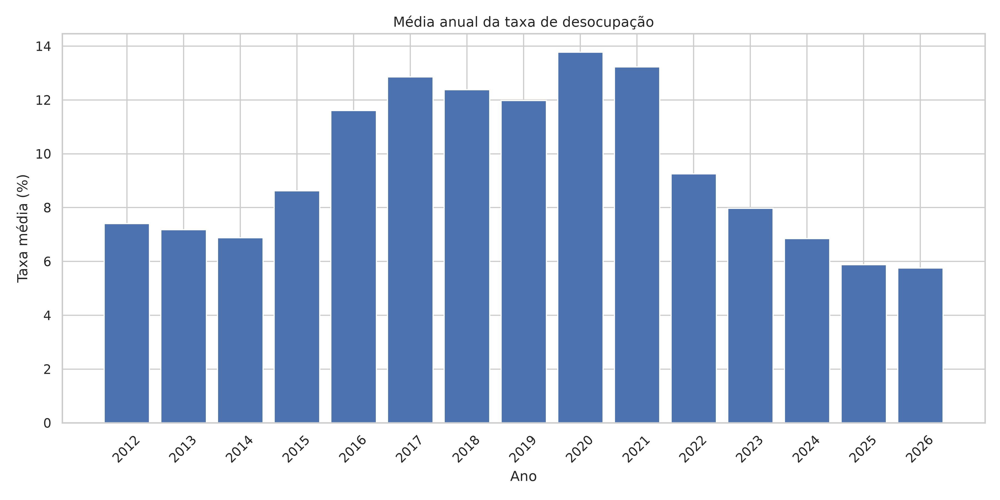

Análise da Evolução da Taxa de Desocupação no Brasil
Felipe Barbosa da Silva e Luis Fernando Dantas
Unilasalle
Curso de Sistemas de Informação
Resumo
Este trabalho apresenta uma análise da evolução da taxa de desocupação no Brasil, utilizando dados da Pesquisa Nacional por Amostra de Domicílios Contínua (PNAD Contínua), disponibilizados pelo Instituto Brasileiro de Geografia e Estatística (IBGE), por meio do sistema SIDRA, tabela 4099. O objetivo é identificar o comportamento da desocupação ao longo do período analisado, observar as diferenças entre as médias anuais e identificar os maiores e menores valores registrados. A metodologia caracteriza-se como uma pesquisa quantitativa e descritiva, baseada na coleta, organização, tratamento e análise de dados utilizando Python, Pandas, Matplotlib e Seaborn. Os resultados indicam uma trajetória de redução da taxa entre 2012 e 2014, seguida por um período de crescimento, com valores elevados entre 2016 e 2021. O maior valor observado foi de 14,9%, no terceiro trimestre de 2020. Após esse período, identificou-se uma tendência de redução, chegando ao menor valor da série, 5,1%, no quarto trimestre de 2025. Conclui-se que a taxa de desocupação apresentou mudanças expressivas ao longo do período, evidenciando diferentes fases do mercado de trabalho brasileiro.
Palavras-chave: Desocupação; Mercado de Trabalho; Brasil; IBGE; Análise de Dados.
Abstract
This study analyzes the evolution of the unemployment rate in Brazil using data from the Continuous National Household Sample Survey (PNAD Contínua), provided by the Brazilian Institute of Geography and Statistics (IBGE), through the SIDRA database, table 4099. The objective is to identify unemployment trends over the analyzed period, compare annual averages, and identify the highest and lowest recorded rates. The methodology is based on a quantitative and descriptive approach, using data collection, organization, processing, and analysis with Python, Pandas, Matplotlib, and Seaborn. The results indicate a decline in the unemployment rate between 2012 and 2014, followed by an increase, with high levels between 2016 and 2021. The highest observed rate was 14.9% in the third quarter of 2020. After this period, a downward trend was identified, reaching the lowest value in the series, 5.1%, in the fourth quarter of 2025. The findings demonstrate significant changes in the Brazilian labor market throughout the analyzed period.
Keywords: Unemployment; Labor Market; Brazil; IBGE; Data Analysis.
1. Introdução
O mercado de trabalho é um importante indicador das condições econômicas e sociais de um país. Entre os indicadores utilizados para acompanhar sua situação, destaca-se a taxa de desocupação, que representa a proporção de pessoas desocupadas em relação à força de trabalho.
No Brasil, o Instituto Brasileiro de Geografia e Estatística (IBGE) realiza a Pesquisa Nacional por Amostra de Domicílios Contínua (PNAD Contínua), responsável por fornecer informações sobre as características do mercado de trabalho brasileiro.
Diante da importância desse indicador, este estudo busca analisar a evolução da taxa de desocupação no Brasil, identificando tendências, variações e períodos de maior e menor desocupação.
Para orientar a pesquisa, foram definidas as seguintes questões:
- RQ1: Como a taxa de desocupação evoluiu ao longo do período analisado?
- RQ2: Quais anos apresentaram as maiores e menores médias de desocupação?
- RQ3: Quais foram as principais variações anuais e os valores extremos registrados?
O objetivo geral é analisar o comportamento da taxa de desocupação brasileira por meio de técnicas de análise exploratória e visualização de dados.
2. Metodologia
A pesquisa possui abordagem quantitativa e caráter descritivo. Foram utilizados dados da PNAD Contínua, disponibilizados pelo IBGE por meio do Sistema IBGE de Recuperação Automática (SIDRA), especificamente a tabela 4099.
Os dados foram organizados e processados utilizando a linguagem Python. Para a manipulação das informações foi utilizada a biblioteca Pandas. As visualizações foram desenvolvidas com Matplotlib e Seaborn.
O processo de análise foi dividido em etapas: obtenção dos dados, preparação e organização, cálculo de estatísticas descritivas, comparação das médias anuais, identificação dos valores máximos e mínimos e construção de gráficos.
A análise considerou 58 observações trimestrais, abrangendo o período de 2012 até os dados disponíveis de 2026. Para a comparação anual, foram calculadas as médias da taxa de desocupação e suas variações em pontos percentuais.
3. Resultados e Discussão
3.1 Evolução histórica da taxa de desocupação
A análise histórica demonstra que a taxa de desocupação passou por diferentes fases. Entre 2012 e 2014, observou-se uma redução nos valores. A partir de 2015, ocorreu um crescimento, com níveis elevados entre 2016 e 2021.
O maior valor identificado foi de 14,9%, registrado no terceiro trimestre de 2020. Posteriormente, os dados demonstram uma redução da taxa de desocupação, que atingiu 5,1% no quarto trimestre de 2025.
Figura 1 – Evolução histórica da taxa de desocupação

Fonte: Elaborado pelos autores com dados do IBGE (PNAD Contínua).
3.2 Comparação das médias anuais
A comparação das médias anuais identificou 2020 como o ano de maior média de desocupação, com 13,78%. Em seguida, destacam-se 2017, com 12,85%, e 2018, com 12,38%.
Entre os anos completos apresentados, 2025 registrou a menor média anual, com 5,88%. O ano de 2026 apresentou média de 5,75%, porém seus dados são parciais e, portanto, não devem ser comparados diretamente com os anos completos.
Figura 2 – Média anual da taxa de desocupação

Fonte: Elaborado pelos autores com dados do IBGE (PNAD Contínua).
3.3 Distribuição das taxas de desocupação
A distribuição das taxas permite observar a frequência dos diferentes valores registrados durante o período analisado. Essa visualização complementa a análise histórica e permite compreender a concentração das observações em determinadas faixas de desocupação.
Figura 3 – Distribuição das taxas de desocupação

Fonte: Elaborado pelos autores com dados do IBGE (PNAD Contínua).
3.4 Variação anual
A maior elevação da média anual ocorreu entre 2015 e 2016, com aumento de 2,97 pontos percentuais. Por outro lado, a maior redução ocorreu entre 2021 e 2022, com queda de 3,97 pontos percentuais.
Esses resultados demonstram mudanças importantes no comportamento da desocupação brasileira ao longo do período, especialmente durante os anos de maiores taxas e no período posterior a 2021.
4. Conclusão
A análise permitiu identificar mudanças significativas na taxa de desocupação do Brasil ao longo do período estudado. Os resultados apontaram crescimento da desocupação a partir de 2015, manutenção de níveis elevados entre 2016 e 2021 e redução nos anos seguintes.
O maior valor registrado foi de 14,9%, no terceiro trimestre de 2020, enquanto o menor foi de 5,1%, no quarto trimestre de 2025. A comparação anual também evidenciou uma redução expressiva entre 2021 e 2022.
Conclui-se que a utilização de ferramentas de análise de dados possibilitou identificar tendências e variações relevantes no mercado de trabalho brasileiro. Como limitação, destaca-se que os dados de 2026 são parciais, sendo necessária cautela em sua comparação com os anos completos.
5. Declaração de conformidade FAIR
O projeto busca seguir os princípios FAIR (Findable, Accessible, Interoperable e Reusable), disponibilizando os dados utilizados, os códigos de processamento e a documentação em um repositório público no GitHub. A organização dos arquivos, a identificação da fonte dos dados e a documentação das etapas de processamento contribuem para a localização, o acesso, a interoperabilidade e a reutilização dos materiais.
Referências
INSTITUTO BRASILEIRO DE GEOGRAFIA E ESTATÍSTICA (IBGE). Indicadores de trabalho: taxa de desocupação. Disponível em: https://www.ibge.gov.br/indicadores#desemprego . Acesso em: 16 nov. 2026.
INSTITUTO BRASILEIRO DE GEOGRAFIA E ESTATÍSTICA (IBGE). Sistema IBGE de Recuperação Automática (SIDRA). Tabela 4099 – Pesquisa Nacional por Amostra de Domicílios Contínua. Disponível em: https://sidra.ibge.gov.br/tabela/4099 .